Kiểm tra bộ cảm biến.
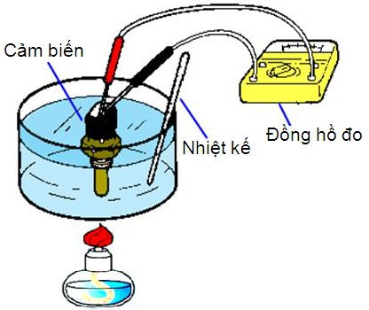
Quá trình kiểm tra bộ cảm biến thực hiện lắp một bộ chỉ thị chuẩn. Điện trở của bộ chỉ thị chuẩn đo ở hai đầu phải đạt trị số 100 ±1Ω. Nhiệt độ thủy ngân dùng loại có độ chia 0,10C.
Trong quá trình kiểm tra bộ cảm biến, cần phải xác định giá trị điện trở của nó tương ứng với các điểm nhiệt độ cần kiểm tra.
Trị số điện trở đo được xác định nhờ vôn kế và ampe kế theo biểu thức:
RCB = UCB / ICB
Trong đó
RCB - điện trở của bộ cảm biến ΔUCB - điện trở rơi trên cảm biến
ICB - cường độ dòng điện đi qua bộ cảm biến.
Bảng 2.h: Trị số điện trở của bộ cảm biến ở các nhiệt độ khác nhau.
|
Nhiệt độ kiểm tra (0C)
|
Trị số điện trở của cảm biến (Ω)
|
|
40
|
318 - 418
|
|
60
|
194 - 234
|
|
80
|
124 - 144
|
|
100
|
80 - 92
|
|
120
|
54 - 62
|
-
Đồng hồ báo nhiên liệu.
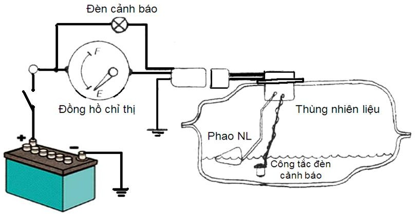
Hình 2.64: Hệ thống đồng hồ báo nhiên liệu.
Khi dụng cụ đo mức nhiên liệu bị hỏng, trước hết cần tháo dây dẫn nối thông với thùng chứa nhiên liệu, lúc này kim của bộ chỉ thị phải chỉ ở vị trí F (tương ứng với mức nhiên liệu đầy thùng).
Nếu cho dây đó chạm vào mát, kim của bộ chỉ thị chỉ ở vị trí E (tương ứng vối thùng rỗng). Nếu kim của bộ chỉ thị không chỉ ở vị trí F, bộ chỉ thị bị hỏng.
Nếu tiến hành kiểm tra như trên mà kim của bộ chỉ thị chỉ đứng ở một vị trí, bộ cảm biến bị hỏng.
Kiểm tra điện trở cảm biến của đồng hồ nhiên liệu.
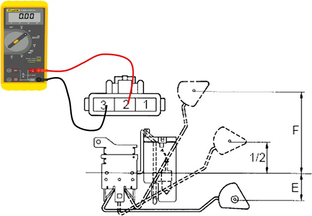
Hình 2.65: Sơ đồ kiểm tra điện trở cảm biến của đồng hồ nhiên liệu.
Kiểm tra theo sơ đồ hình vẽ và so sánh với bảng dưới.
Nếu có sự sai lệch lớn thì thay thế cảm biến.
Bảng 2.i: Trị số điện trở của bộ cảm biến ở các vị trí phao nhiên liệu.
|
Vị trí phao nhiên liệu
|
Điện trở đo được (Ω)
|
|
F
|
3,0
|
|
1/2
|
31,7
|
|
E
|
110
|

Kiểm tra hoạt động của đồng hồ báo nhiên liệu.
Nối bóng đèn với cọc 2,3 bóng sáng. Nếu bóng không sáng cuộn dây trong đồng hồ bị đứt thay thế đồng hồ.
Kiểm tra bộ đèn cảnh báo nhiên liệu.
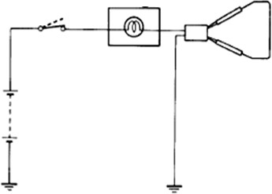
Ngắt giắc ra khỏi công tắc báo mức nhiên liệu.
Nối các cực trên giắc nối phía dây điện của giắc công tắc mức nhiên liệu.
Bật khóa điện, nếu đèn không sáng thì kiểm tra bóng.
Kiểm tra công tắc đèn cảnh báo nhiên liệu.
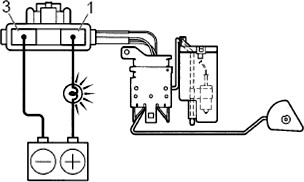
Cấp điện áp ắc quy (+), (-) với cọc 2,3 qua bóng đèn thử 3.5 W bóng sáng.
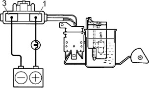
Nhúng công tắc vào xăng, kiểm tra bóng tắt, nếu hoạt động không tắt thì thay công tắc đèn cảnh báo.
-
Đồng hồ đo áp suất dầu bôi trơn động cơ.
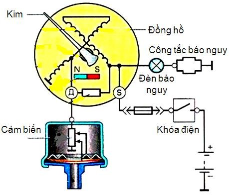
Hình 2.66: Hệ thống đồng hồ chỉ thị áp suất dầu bôi trơn động cơ.
Đồng hồ đo áp suất đầu bôi trơn bị hỏng, có thể kiểm tra theo trình tự như sau:
Đóng công tắc khởi động, nếu đồng hồ đo nhiệt độ nước làm mát và đồng hồ đo mức nhiên liệu trong bình chứa làm việc bình thường, trước hết phải kiểm tra các dây nối đến đồng hồ đo có bị đứt hay không.
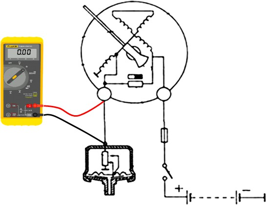
Hình 2.67: Kiểm tra dây dẫn nối cảm biến đến đồng hồ.
Nếu sau khi đã khởi động máy, kim chỉ thị của đồng hồ đo áp suất dầu không lệch khỏi vị trí 0, dùng đoạn dây nối mát cọc đấu dây của bộ cảm biến nếu không có tia lửa điện và kim đồng hồ cũng không động đậy chứng tỏ đồng hồ chỉ thị bị hỏng.
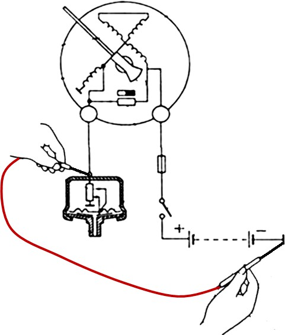
Hình 2.68: Kiểm tra mát cảm biến áp xuất dầu.
Nếu nối mát cọc đấu dây của bộ cảm biến, có tia lửa yếu và kim đồng hồ hơi nhúc nhích, có thể trong mạch của bộ cảm biến bị hở mạch hoặc áp suất dầu quá thấp.
Tháo bộ cảm biến xuống, đấu lại dây như cũ, nối vỏ của bộ cảm biến với mát.
Dùng một que nhỏ tác động vào màng đàn hồi. Nếu kim của bộ chỉ thị di động chứng tỏ trong hệ thống cấp dầu bôi trơn bị sự cố. Ngược lại khi tác động như trên mà kim của bộ chỉ thị không nhúc nhích, chứng tỏ bộ cảm biến bị hỏng cần thay thế.
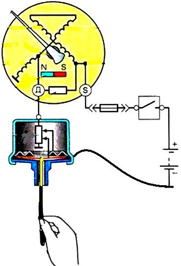
Hình 2.69: Kiểm tra áp suất cảm biến.
Kiểm tra đèn cảnh báo áp lực dầu.

Ngắt giắc ra khỏi công tắc báo áp lực dầu.
Nối cực của bóng đèn báo áp lực dầu với mát.
Bật khóa điện, nếu đèn không sáng thì kiểm tra bóng.
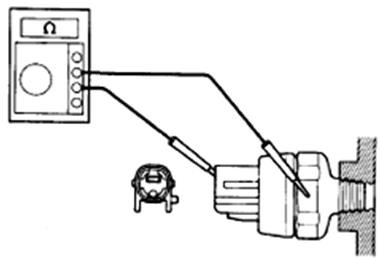
Kiểm tra công tắc áp lực dầu.
Ngắt giắc ra khỏi bóng đèn báo áp lực dầu.
Dùng Ω kế kiểm tra thông mạch giữa công tắc cảnh báo và mát khi động cơ không hoạt động.
Khi không thông mạch thay thế công tắc.
-
Đồng hồ đo tốc độ Ô tô.
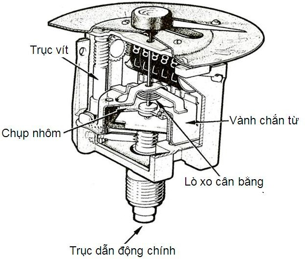
Hình 2.70: Cấu tạo đồng hồ đo tốc độ kiểu cơ khí.
Những hỏng hóc thường gặp của dụng cụ đo tốc độ là:
Chỉ số của đồng hồ đo tốc độ không đúng với tốc độ thực, do bộ đo tốc độ hiệu chỉnh không hợp lý. Kiểm tra các chỗ nổi của dây cáp xoay với bộ chỉ thị và hộp số của xe. Tiếp theo, kiểm tra xem dây cáp xoay có bị đứt hay không, một trong những nguyên nhân dẫn đến đứt dây cáp xoay là do các bánh đếm bị kẹt.
Kim của bộ chỉ thị tốc độ bị rung, không ổn định, nguyên nhân chủ yếu là do lắp đây cáp xoay không đúng (các chỗ nôi bắt không chắc chắn, độ uốn cong của dây cáp xoay nhỏ hơn 150 mm bán kính), dầu bôi trơn trong dây cáp xoay không đủ, dây cáp xoay không di chuyển được theo chiều dọc.
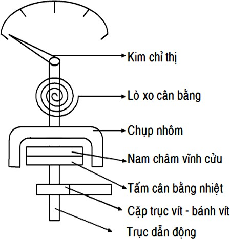
Hình 2.71: Sơ đồ nguyên lý đồng hồ tốc độ Ô tô kiểu cơ khí.